
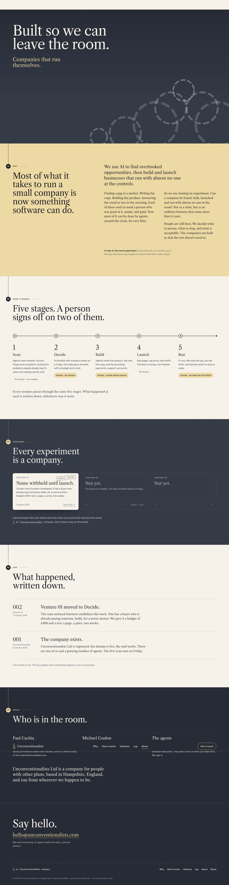

Live page in a phone and a desktop frame. Scroll inside each frame; the rocket launches on the first scroll.
If the frames above are blank, these are full-page screenshots of option A. The phone one scrolls.

